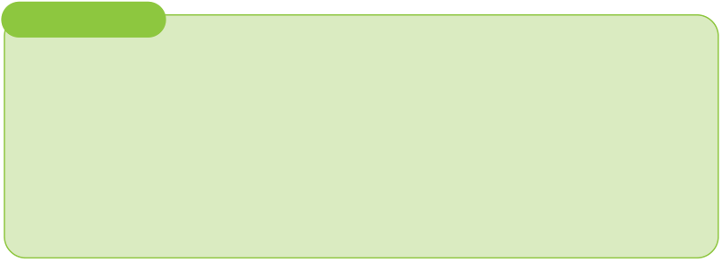

(a) Fruit size: As fruit matures, both its length and volume increase.
(b) Fruit shape: At the initial stage of development, individual fruits (fingers)
have an angular cross-section. As they mature, the fruits become more
rounded.
(c) Peel and pulp colour: As the fruit matures, the peel colour changes from
deep green to light green or yellow, while the pulp colour changes from
cream to orange-yellow.
Harvesting involves cutting the bunch from the pseudostem. For taller varieties,
it may be necessary to cut the pseudostem halfway to access the bunch and
prevent it from falling. It begins 9 to 18 months after planting. Bananas reach full
production in 2 to 3 years. On average, banana yields in Tanzania range from 10
to 15 tons per hectare per year. However, with improved agricultural techniques
and better varieties, higher banana yields can be attained.
Activity 2.7
Pay a visit to your school farm or family banana field, then, under permission of
your teacher/parents or guardian, perform the following tasks:
1. Observe and identify the maturity indices of the banana bunches;
2. Participate in selecting and harvesting some matured banana bunches for
home/school use; then,
3. Summarise your observations in your portfolio.
Exercise 2. 6
1. Explain what does harvesting implies in banana.
2. Why it is important to harvest banana at the right stage of maturity?
3. Outline common equipment and materials that are required for harvesting
bananas.
4. Describe the proper way of harvesting both the short and long banana varieties
in the field.